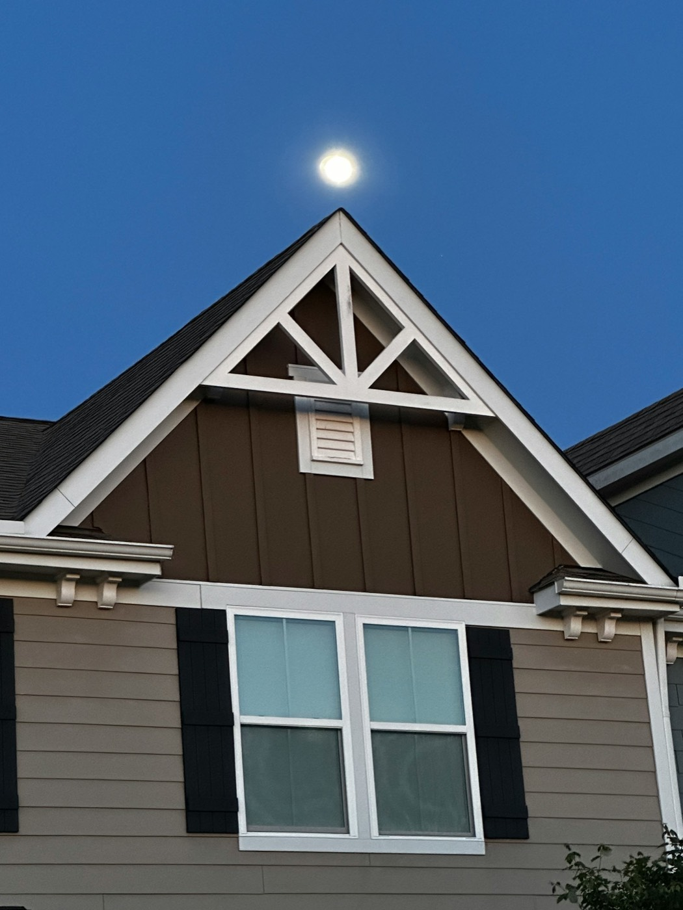

Dementia care at home in Tampa Bay
Dementia care your whole family can see.
Trained caregivers at home, a start within 72 hours, and a live app so you always know how they are.
- Maria arrived · GPS check-in
- Breakfast eaten, all of it
- Fluids: 2 glasses of water
- Walk in the garden, 20 minutes
- Lunch eaten
- Mood: calm · listened to Sinatra
- Photo shared with the family circle
- Afternoon routine started early, as planned
Who is this for
Tell us what is happening and we will show you the way.
Choose the one closest to you. The page below changes to match, and we remember your choice.
 A caregiver laughing with an older woman in a lounge
A caregiver laughing with an older woman in a loungeWhen your mom has dementia
You want someone who does not rush them, who knows their story and who notices the small changes. Every caregiver completes our dementia training before their first visit, and works in a team of two or three so your mom sees familiar faces.
- A Life Story profile read before every visit
- A sundowning plan for the late afternoon
- A home safety walk-through
- Free family coaching on communication
 An older couple on a video call with family
An older couple on a video call with familyWhen you live far away
You get a named Care Director, a live app that shows each visit as it happens, a weekly update and a monthly video call. If something goes wrong, you hear within minutes, not days.
- GPS check-in and check-out for every visit
- Care notes, mood and meals in the app
- Emergency escalation to the family circle
- Errands: groceries, prescriptions, appointment rides
 A volunteer pushing a trolley along a hospital corridor
A volunteer pushing a trolley along a hospital corridorWhen they are coming home from hospital
The first week home is when things go wrong. We speak to the discharge team, check the home, and start care within 72 hours of signing.
- A discharge checklist
- Medicines and follow-up appointments tracked
- Help with washing, dressing and meals
- A first-week plan the whole family can see
Our promises
Six promises we measure and publish.
Anyone can say they care. We put numbers on it, name who owns each promise, and publish the results every month from our first full month of care.
How it works
From first call to first visit in four steps.
- 1
Free care assessment
A care manager visits at home or in hospital, meets your mom and listens to the family. No cost and no obligation.

- 2
A personal care plan
Written with you: routines, likes and dislikes, safety, the Life Story profile and the hours that make sense.

- 3
Meet your team
You meet the main caregiver and a backup caregiver before day one, so a sick day never means a stranger.

- 4
Live updates
Every visit is checked in on the family app, with notes, photos (with consent) and a weekly summary.

Services
Care that matches the day they are having.
Seven services, one team. Prices are starting rates; your exact price is in writing after the assessment.
Suggested for youDementia care
Care that knows who they are, not only what they need.
From USD $38/hourSee what is included › Suggested for you
Suggested for youPersonal care
Help with bathing and dressing that protects their dignity.
From USD $34/hourSee what is included ›Suggested for youCompanion care
Someone to talk to, walk with and cook alongside.
From USD $30/hourSee what is included › Suggested for you
Suggested for youRespite care
Take a break without worrying.
From USD $30/hourSee what is included ›Suggested for youCare after hospital
Home from hospital. Care starting in 72 hours.
From USD $34/hourSee what is included ›
Suggested for you24/7 and live-in care
Around-the-clock care with a team, not one tired person.
From USD $32/nightSee what is included ›Suggested for youCare from afar
Live far away? Be there anyway.
From USD $38/hourSee what is included ›


The family app
See care happen, from anywhere.
Built for phones first, in large type, and simple enough for a 75-year-old sibling. Scroll to walk through it.
Care note · 11:20 am
Talked about his years at the shipyard. Laughed at the old photos. No concerns today.
Mood trend · 2 weeks
Photos
Shared only when Dad and the family have agreed.
Family circle
Demo family · sample data
1 of 5
Visit status
See who is with them, when they arrived and who the backup caregiver is. If a visit is late, you hear about it before you notice.
2 of 5
Care notes
A short structured note every visit: mood, meals, fluids, sleep, activity, bathroom and any concern. A weekly digest and a PDF for the doctor.
3 of 5
Trends
Charts over weeks so you see change early. A gentle flag prompts a call from the care manager, never a diagnosis.
4 of 5
Photos
Moments from a good day, shared only with consent.
5 of 5
Messages and family circle
Brothers, sisters and grandchildren in one thread with the care team, each with their own permissions.
 Training is practised, not just watched.
Training is practised, not just watched.The dementia difference
Training that goes beyond the basics.
Calming communication
Short sentences, one question at a time, and never arguing with their reality. Our caregivers learn to answer the feeling behind the words, so a question like 'when is Mum coming?' gets comfort, not a correction.
Technique videos will be filmed with our own team and added here.
Sundowning
Late afternoon can bring restlessness and fear. We build a calm routine for that time with the family: light, sound, a snack, a familiar task and fewer visitors.
Wandering safety
A home walk-through, door sensors through partner products if the family wants them, an up-to-date photo on file and an emergency contact ladder that everyone knows.
Meals and hydration
Finger foods, coloured plates, offering drinks on a schedule and noting every glass in the app, because dehydration often shows up as more confusion.
Family coaching
A free session for relatives on what to say, what to stop saying and how to look after yourself. Families tell us this is the hour that changed the most.
No question matches. Call us and ask a person.
Real families
What families say.
No reviews yet, and we will not invent any.
We are a new agency in Tampa Bay. When real families review us on Google, their words appear here, live, with the total count and our replies to every review, including the low ones.
Cost made clear
Know the cost before you call.
Move the sliders. The estimate updates as you go.
Estimates for private-pay care, in US dollars, before any long-term care insurance or veterans' benefit. Not a quote: your price is confirmed in writing after the free assessment. Not included: nursing, medical equipment, mileage over 20 miles a week.
Book a free assessment for an exact priceFull price list and detailed estimator › Paying for care explained ›
Meet the team
The people who will be in their home.
We are hiring now. Real photos, first names and badges go here as each caregiver joins. Until then, here is what every one of them will have done. Photos are illustrative.
How we hire, screen and train ›
Questions
The questions every family asks.
Answers first, details after.
How much does home care cost?
Our care starts from USD $30 an hour for companion care, $34 for personal care and $38 for dementia specialist care. Twenty hours a week of dementia care is about USD $3,293 a month. See every price.
How quickly can care start?
Within 72 hours of signing the care agreement, after a free assessment we can usually book within 24 hours.
Are your caregivers trained in dementia?
Yes. Every caregiver completes our dementia program before their first visit, including calming communication, sundowning, wandering safety and meals.
Will my mom see the same caregiver?
Yes. Each client has a small team of two or three, and you meet the backup before day one.
What happens if a caregiver is sick?
The backup they already know steps in. We promise a replacement within 48 hours at most, and usually the same day.
Is there a minimum number of hours?
Visits are at least 3 hours, and most families start with 10 to 20 hours a week.
Do you provide medical or nursing care?
No. We provide non-medical care: personal care, companionship, meals, reminders and support. We work alongside doctors, nurses and hospice teams.
Does Medicare pay for this?
Medicare generally does not pay for ongoing non-medical home care. Long-term care insurance and veterans' benefits may. Paying for care explained.
How do I know you are licensed?
Florida AHCA license number: application in progress. We will not provide care until the license is issued. You can check any provider on the Florida Agency for Health Care Administration site.
Can I stop or change care?
Yes. Change hours in the app with a few days' notice, and stop with 7 days' notice. No long contracts.
No question matches. Call us and ask a person.
Next step
You do not have to work this out alone.
Call (813) 555-0142 and a care advisor will listen first, then tell you plainly what we would do and what it would cost.